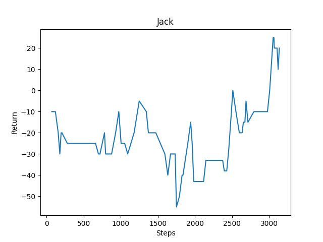

Project Summary: Our goal in this project is to create a learner that can figure out how to navigate terrain and build tools to find the most effective way to gather the maximum amount of wood within a fixed period of time. Since the time that the proposal was written, we decided that the original terrain was a bit too simple, so we added the additional complexity of separating the trees onto unconnected islands. This is our first step towards a future update to Lumberjacks not yet implemented, where the learner will figure out how and when it should build planks to cross from one island to another.
Approach: Before discussing the algorithm that we chose, we need to discuss the environment that our agent exists in. Our agent has a continuous action space; it is always walking at a certain speed, pitching its head at a certain speed, and turning horizontally at a certain speed. The agent is also always deciding whether it wants to start/stop attacking (regardless of if the agent is allowed to attack) and the same is true for axe crafting. Each step the agent supplies a set of actions that includes walk speed, pitch speed, and turn speed as well as booleans representing whether or not the agent wants to attack and whether or not the agent wants to craft an axe.
Regarding our policy, we do not know what action the agent will take at each moment. This is because we are not aware of the optimal wood-gathering path. With this in mind, we know that our learning model has a stochastic policy.
Given the continuous action space and the stochastic policy, we are utilizing the Soft-Actor-Critic algorithm which we are getting from the Ray RLib API. We have a class, “Jack,” which acts as the agent’s environment. Much of our work within the “Jack” class involves finding the optimal reward value to allow the trainer to learn at a reasonable rate. This reward value, of course, is meant to encourage certain behaviors in the agent.
Currently, our main goal is to encourage the agent to gather the most wood within its environment. The more wood that the agent gathers, the higher its reward will be. The first step to this is encouraging the agent to learn that collecting logs is “good” behavior. This begins with giving small intermediate rewards for looking at “log” or “leaves” blocks that are within the agent’s range of attack. We give a much larger reward for actually collecting the wood blocks. This is all meant to encourage the agent to focus on trees and harvest their wood.
Of course, there are certain behaviors that we want to discourage. Minuscule negative rewards are given when the agent is not looking at “log” or “leaves” blocks. This is meant to reinforce to the learner that focusing on trees is “good” and that focusing away from trees is “bad.” Also, we give a much larger negative reward for standing on stone. This is meant to discourage the agent from falling off of the dirt islands and onto the stone that lies between them.
We know that gathering wood is faster when an axe is involved in harvesting. Therefore, we also give a positive reward for crafting a wooden axe. We do keep in mind, however, that the agent should be discouraged from wasting wood on unnecessary axes, so we give a large negative reward for crafting an axe when the agent still has one in its inventory.
Evaluation: We have made considerable progress on this project by both qualitative and quantitative metrics. From a qualitative standpoint, we were able to observe a marked decrease in the number of “stupid” errors that our agent would make such as walking off of the edge or crafting unneeded objects. As for quantitative measurements, we observed an upward trend of total reward earned by the agent over time. The given figure shows how, when given time to train, the agent learned how to optimize behavior for the maximum score in an effective manner.

Remaining Goals and Challenges: As of right now, the agent is learning to optimize wood gathering speed and avoid edges at a reasonable rate. From this point, we want to expand the agent’s capabilities to allow for the building of bridges between islands. It would be optimal if the agent learned to only build bridges when absolutely necessary (e.g. when the agent has exhausted the wood resources on the island). It would be even better if the agent could learn when it’s the best time to build a bridge (e.g. when the trees on the adjacent island are closer to the agent and more abundant than the trees on the current island).
Perhaps the biggest problem that we currently face with the project is that the agent seems to spend an inordinate amount of resources on building extra axes. Although only one axe needs to be built to improve the rate of wood collection, the agent displays a tendency to build more than one axe. The problem persists despite our attempts to alter the reward values to disincentivize the construction of excessive axes.
Resources Used: In the project we used Rllib as our machine learning library. Additionally, we utilized Gym box to define our observation space and action space. Our initial project structure was partly based on assignment 2 provided by the instructor of this course; so although the end result was very different, assignment 2 served as a starting point. We also used StackOverflow and GitHub issue pages to seek solutions to errors that we encountered during the development process. To gain a conceptual understanding of the AI techniques that we used, or even simply considered using, we referenced OpenAI’s website.